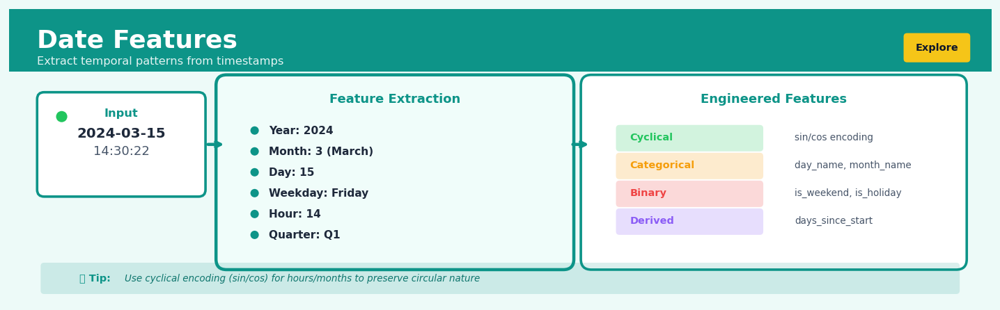

Date Features#


The biggest mistake I see with date features is treating months and hours as linear integers, which breaks the natural cyclical relationship where December is just as close to January as it is to November. Always use sine and cosine transformations for cyclical features, and consider adding interaction terms like is_weekend multiplied by hour to capture patterns like weekend morning shopping behavior that differ from weekday patterns. Domain knowledge about your specific temporal patterns will outperform blindly extracting every possible date component.
The 60-Second Version#
What it does: Date feature engineering converts calendar dates into numbers that reveal patterns like seasonality, day-of-week effects, and trends that algorithms can learn from.
When to use it: Use it whenever your data contains dates or timestamps and you suspect that timing matters—sales fluctuating by season, customer behavior changing by day of week, or demand spiking around holidays.
What you get back: You receive new columns (like month, day_of_week, is_weekend, days_since_launch) that your models can use to make better predictions and your analysts can use to spot temporal patterns.
Difficulty |
Easy |
Typical runtime |
Seconds on millions of rows |
What you bring |
A dataset with at least one datetime column |
What you get |
Expanded dataset with numeric and categorical time features |
Heuristix bucket |
Explore — Shaping & Transforming Data |
Date features only capture patterns that repeat predictably—they won’t help you predict truly unprecedented events or one-off disruptions.
Overview#
Date feature engineering is the systematic extraction of meaningful temporal attributes from datetime columns to enable machine learning models and statistical analyses to capture time-based patterns in data. This technique transforms raw timestamps—which are inherently difficult for most algorithms to interpret directly—into a rich set of numeric and categorical features representing cyclical patterns, calendar effects, and temporal distances. Date features belong to the broader family of feature engineering methods and serve as a foundational preprocessing step in any time-aware predictive modelling workflow.
When to Use This#
Use this when your dataset contains datetime columns and you need to capture seasonality effects, such as higher retail sales on weekends or increased insurance claims during winter months.
Use this when building demand forecasting models where the day of week, month of year, or proximity to holidays significantly influences the target variable.
Use this when analysing customer behaviour patterns that vary by time of day, such as website traffic peaks during lunch hours or transaction volumes during business hours.
Use this when you need to capture business calendar effects, such as end-of-quarter spikes in B2B sales or payroll-driven patterns around the first and fifteenth of each month.
Use this when your predictive model treats time as a feature rather than an index—for example, in cross-sectional models that predict outcomes based on when an event occurred.
Use this when you want to enable tree-based models (which cannot extrapolate trends) to learn time-based splits on cyclical and calendar features.
Do NOT use this when you are performing pure time series forecasting with models that handle temporal structure natively (e.g., ARIMA, Prophet, or state-space models)—these methods expect a time index, not engineered features.
Do NOT use this when your datetime column is merely an identifier with no predictive relevance, such as a data entry timestamp that does not influence the outcome.
Do NOT use this when the temporal granularity of your features mismatches your prediction task—extracting hour-of-day features is meaningless if your data is aggregated at the monthly level.
Do NOT use this when you have insufficient data to estimate effects for all levels of a categorical date feature (e.g., extracting day-of-year with only six months of data).
Questions This Answers#
Seasonal and Cyclical Performance#
Why do our sales spike every December but drop in January — is this a pattern we can predict and prepare for?
Are Mondays really our worst day for customer service calls, or does it just feel that way?
Which months consistently underperform for our subscription renewals, and should we be timing our retention campaigns differently?
Do we see different purchasing behavior on weekends versus weekdays, and should our staffing reflect that?
Is there a “back-to-school” effect on our business even though we don’t sell school supplies?
Forecasting and Planning#
If I need to forecast Q4 revenue by September, how much weight should I give to last year’s Q4 versus overall growth trends?
Should we stock more inventory before major holidays, and if so, how many days in advance do customers start buying?
Are we missing revenue opportunities by keeping the same staffing levels year-round instead of adjusting for busy seasons?
How far in advance can we reliably predict which customers will churn next month?
Will the summer slowdown hit us as hard this year as it did last year, or are we finally breaking that pattern?
Campaign and Operational Timing#
When’s the best day of the week to launch our email campaigns for maximum engagement?
Does our promotion performance change if we run it mid-month versus month-end when budgets are tight?
Are customers who sign up during our Black Friday sale more or less likely to stick around than those who join in March?
Should we avoid launching new features on Fridays, or does deployment day actually not matter for user adoption?
The Intuition#
Consider how a retail store manager thinks about staffing decisions. They do not simply look at a timestamp like “2024-03-15 14:30:00” and intuit the expected customer volume. Instead, they mentally decompose this moment into meaningful components: it is a Friday (historically busy), mid-March (post-holiday lull), mid-afternoon (moderate traffic), and not a public holiday. Each of these temporal characteristics carries distinct predictive information that the manager combines to make a staffing decision. Date feature engineering formalises this intuitive decomposition.
The fundamental insight is that raw datetime values are problematic for machine learning algorithms in two ways. First, they are essentially arbitrary numeric encodings—the number of seconds since January 1, 1970 (Unix epoch) tells a model nothing about whether a timestamp falls on a weekend or a holiday. Second, time is inherently cyclical: hour 23 is closer to hour 0 than it is to hour 12, but naive integer encoding obscures this relationship. By extracting structured features like hour-of-day, day-of-week, and month-of-year, we translate temporal information into a form that algorithms can meaningfully learn from.
The power of date features becomes evident when you consider how they enable models to capture complex temporal patterns without explicit time series machinery. A gradient boosting model, for instance, cannot learn that “sales increase by 3% each year” from raw timestamps alone because it cannot extrapolate beyond training data. However, if you provide it with a “month” feature and a “day of week” feature, it can learn that December sales are higher than February sales, and that Saturdays outperform Tuesdays. This transforms the forecasting problem from one of extrapolation (which tree models cannot do) to one of pattern recognition (which they excel at).
The Mathematics#
Formal Problem Setup#
Let \(\mathcal{D} = \{(t_i, \mathbf{x}_i, y_i)\}_{i=1}^{n}\) denote a dataset where \(t_i \in \mathcal{T}\) is a timestamp, \(\mathbf{x}_i \in \mathbb{R}^p\) is a vector of non-temporal features, and \(y_i\) is the target variable. The goal of date feature engineering is to construct a mapping \(\phi: \mathcal{T} \rightarrow \mathbb{R}^q\) that transforms each timestamp into a \(q\)-dimensional feature vector, yielding an augmented dataset \(\{(\phi(t_i), \mathbf{x}_i, y_i)\}_{i=1}^{n}\).
Extraction Functions#
For a timestamp \(t\), we define the following extraction functions. Let \(\text{year}(t)\), \(\text{month}(t)\), \(\text{day}(t)\), \(\text{hour}(t)\), \(\text{minute}(t)\), and \(\text{second}(t)\) return the respective calendar components as integers.
The day of week is computed as:
where \(J(t)\) is the Julian day number of timestamp \(t\). By convention, we typically encode Monday as 0 and Sunday as 6.
The day of year is:
where \(t_{\text{day}}\) is the date component of \(t\) and \(t_{\text{jan1}}\) is January 1 of the same year.
The week of year follows the ISO 8601 standard, where week 1 is the week containing the first Thursday of the year.
Cyclical Encoding#
Integer encodings of cyclical features create artificial discontinuities. For a cyclical feature with period \(P\) (e.g., \(P = 24\) for hour of day), the naive encoding places value \(P-1\) maximally distant from value \(0\), despite their temporal adjacency.
We resolve this through sinusoidal transformation. For a cyclical variable \(c \in \{0, 1, \ldots, P-1\}\):
The pair \((c_{\sin}, c_{\cos})\) maps the cyclical variable to the unit circle, preserving the cyclical distance metric. The Euclidean distance between two points on this encoding satisfies:
This ensures that hour 23 and hour 0 are close in the feature space when \(P = 24\).
Binary Indicator Features#
Let \(\mathcal{H}\) denote a set of holiday dates and \(\mathcal{W} = \{5, 6\}\) the weekend day indices (Saturday, Sunday). We define:
Temporal Distance Features#
For a reference date \(t_{\text{ref}}\) (e.g., the most recent holiday), the temporal distance is:
where \(\tau\) is a normalisation constant (e.g., one day in the same units as \(t\)). This can be computed as days since the last holiday, days until the next holiday, or both.
Business Day Calculations#
Let \(\mathcal{B} = \mathcal{T} \setminus (\mathcal{W} \cup \mathcal{H})\) denote the set of business days. The business day of month for timestamp \(t\) is:
Assumptions and Edge Cases#
The key assumptions underlying date feature engineering are:
Stationarity of cyclical effects: The relationship between, say, day-of-week and the target variable remains stable over time. Structural breaks (e.g., a pandemic changing weekend shopping patterns) violate this assumption.
Sufficient data coverage: Each level of a categorical date feature must have adequate representation in the training data to estimate its effect reliably.
Meaningful temporal granularity: The extracted features must match the temporal resolution of the underlying process.
Edge cases include:
Leap years: February 29 appears in day-of-year encodings only in leap years, creating potential train/test mismatches.
Timezone handling: A timestamp may represent different local times depending on timezone, affecting hour-of-day features.
Daylight saving transitions: Some days have 23 or 25 hours, affecting hour-based aggregations.
Understanding the Mathematics#
Cyclical Encoding: Sine Transform#
The equation:
Read it aloud:
“The sine-transformed value equals the sine of two pi multiplied by the original value, divided by the period.”
What each symbol means:
\(x_{\sin}\) = the transformed cyclical feature (output)
\(\sin\) = the sine function (creates smooth wave pattern)
\(2\pi\) = one complete rotation in radians (approximately 6.28)
\(x\) = the original time value (e.g., hour of day, month of year)
\(T\) = the period or total number of units in the cycle (e.g., 24 for hours, 12 for months)
A concrete numerical example:
Suppose we’re encoding the hour for 3 PM in a retail foot traffic model. Here, \(x = 15\) (3 PM in 24-hour format) and \(T = 24\) (hours in a day).
Step 1: Calculate the fraction of the cycle: \(15 ÷ 24 = 0.625\)
Step 2: Multiply by \(2\pi\): \(0.625 × 6.28 = 3.93\) radians
Step 3: Take the sine: \(\sin(3.93) = -0.707\)
So 3 PM becomes \(x_{\sin} = -0.707\).
Why this equation matters:
Without cyclical encoding, hour 23 and hour 0 would appear far apart numerically (difference of 23), even though they’re only one hour apart in reality—breaking any model’s ability to learn that midnight and late evening share similar customer behaviour patterns.
Cyclical Encoding: Cosine Transform#
The equation:
Read it aloud:
“The cosine-transformed value equals the cosine of two pi multiplied by the original value, divided by the period.”
What each symbol means:
\(x_{\cos}\) = the second cyclical feature dimension (output)
\(\cos\) = the cosine function (creates wave pattern offset from sine by 90 degrees)
All other symbols identical to sine transform
A concrete numerical example:
Continuing with 3 PM from our retail example where we calculated \(3.93\) radians:
\(\cos(3.93) = -0.707\)
So we represent hour 15 as the coordinate pair: \((-0.707, -0.707)\).
For midnight (hour 0): \(\cos(0) = 1.0\) and \(\sin(0) = 0.0\), giving us \((1.0, 0.0)\).
For 6 AM (hour 6): \(\cos(\pi/2) = 0.0\) and \(\sin(\pi/2) = 1.0\), giving us \((0.0, 1.0)\).
Why this equation matters:
The sine alone cannot uniquely represent every point in the cycle—you need both sine and cosine together to create unique two-dimensional coordinates that preserve the circular distance relationships between all time points.
Days Since Epoch#
The equation:
Read it aloud:
“The number of days equals the floor of the timestamp minus the epoch start time, divided by 86,400.”
What each symbol means:
\(d\) = number of complete days since reference point
\(\lfloor \cdot \rfloor\) = floor function (rounds down to nearest integer)
\(t\) = current timestamp in seconds
\(t_0\) = reference epoch timestamp in seconds (often January 1, 1970)
\(86400\) = seconds in one day (60 × 60 × 24)
A concrete numerical example:
Calculate days since launch for a subscription model. Launch date: January 1, 2020 (\(t_0 = 1577836800\) seconds). Current date: January 15, 2020 (\(t = 1579046400\) seconds).
Step 1: Subtract timestamps: \(1579046400 - 1577836800 = 1209600\) seconds
Step 2: Divide by seconds per day: \(1209600 ÷ 86400 = 14\)
Step 3: Floor (already whole): \(\lfloor 14 \rfloor = 14\) days
Why this equation matters:
This converts irregular timestamp formats into a simple monotonic counter that models can use to detect linear trends, decay patterns, or calculate exact time gaps between events without wrestling with leap years or timezone complexity.
The Big Picture#
The mathematics of date feature engineering fundamentally transforms time from an opaque timestamp into geometry and arithmetic that algorithms can interpret. Cyclical encoding uses trigonometry to bend linear time into circular coordinates, preserving the crucial insight that December 31st and January 1st are neighbours, not opposites. Epoch calculations flatten calendar complexity into simple counts, letting models detect trends without understanding human calendar conventions. We choose these specific mathematical tools because they preserve distance relationships—two close points in actual time remain close in the transformed space—which simpler approaches like one-hot encoding or raw timestamps destroy. At its essence, this mathematics teaches machines to measure time the way humans experience it: as repeating cycles overlaid on a forward-flowing stream.
Python Implementation#
import numpy as np
import pandas as pd
from datetime import datetime, timedelta
# Create a realistic synthetic dataset: hourly retail transactions
np.random.seed(42)
n_records = 5000
# Generate timestamps spanning two years
start_date = datetime(2022, 1, 1)
timestamps = [start_date + timedelta(hours=np.random.randint(0, 24*730))
for _ in range(n_records)]
timestamps = sorted(timestamps)
# Create DataFrame
df = pd.DataFrame({
'transaction_timestamp': pd.to_datetime(timestamps),
'store_id': np.random.choice(['A', 'B', 'C'], n_records),
'transaction_amount': np.random.exponential(50, n_records)
})
print("Original DataFrame:")
print(df.head(10))
print(f"\nShape: {df.shape}")
# =============================================================================
# Basic Date Feature Extraction
# =============================================================================
def extract_basic_date_features(df, date_col):
"""
Extract fundamental calendar components from a datetime column.
Parameters:
-----------
df : pd.DataFrame
Input DataFrame
date_col : str
Name of the datetime column
Returns:
--------
pd.DataFrame
DataFrame with additional date feature columns
"""
df = df.copy()
dt = df[date_col]
# Calendar components
df['year'] = dt.dt.year
df['month'] = dt.dt.month
df['day'] = dt.dt.day
df['hour'] = dt.dt.hour
df['minute'] = dt.dt.minute
# Derived calendar features
df['day_of_week'] = dt.dt.dayofweek # Monday=0, Sunday=6
df['day_of_year'] = dt.dt.dayofyear
df['week_of_year'] = dt.dt.isocalendar().week.astype(int)
df['quarter'] = dt.dt.quarter
# Binary indicators
df['is_weekend'] = (dt.dt.dayofweek >= 5).astype(int)
df['is_month_start'] = dt.dt.is_month_start.astype(int)
df['is_month_end'] = dt.dt.is_month_end.astype(int)
df['is_quarter_start'] = dt.dt.is_quarter_start.astype(int)
df['is_quarter_end'] = dt.dt.is_quarter_end.astype(int)
return df
df_basic = extract_basic_date_features(df, 'transaction_timestamp')
print("\nBasic Date Features:")
print(df_basic[['transaction_timestamp', 'year', 'month', 'day_of_week',
'is_weekend', 'is_month_end']].head(10))
# =============================================================================
# Cyclical Encoding
# =============================================================================
def encode_cyclical_features(df, col, period):
"""
Apply sine/cosine transformation to preserve cyclical relationships.
Parameters:
-----------
df : pd.DataFrame
Input DataFrame
col : str
Name of the column to encode
period : int
The period of the cycle (e.g., 24 for hours, 7 for days of week)
Returns:
--------
pd.DataFrame
DataFrame with sine and cosine encoded columns
"""
df = df.copy()
df[f'{col}_sin'] = np.sin(2 * np.pi * df[col] / period)
df[f'{col}_cos'] = np.cos(2 * np.pi * df[col] / period)
return df
# Apply cyclical encoding to relevant features
df_cyclical = df_basic.copy()
df_cyclical = encode_cyclical_features(df_cyclical, 'hour', 24)
df_cyclical = encode_cyclical_features(df_cyclical, 'day_of_week', 7)
df_cyclical = encode_cyclical_features(df_cyclical, 'month', 12)
df_cyclical = encode_cyclical_features(df_cyclical, 'day_of_year', 365)
print("\nCyclical Encoded Features (Hour):")
print(df_cyclical[['hour', 'hour_sin', 'hour_cos']].head(10))
# Verify cyclical property: hours 23 and 0 should be close
hour_23 = df_cyclical[df_cyclical['hour'] == 23][['hour_sin', 'hour_cos']].iloc[0]
hour_0 = df_cyclical[df_cyclical['hour'] == 0][['hour_sin', 'hour_cos']].iloc[0]
hour_12 = df_cyclical[df_cyclical['hour'] == 12][['hour_sin', 'hour_cos']].iloc[0]
dist_23_to_0 = np.sqrt((hour_23['hour_sin'] - hour_0['hour_sin'])**2 +
(hour_23['hour_cos'] - hour_0['hour_cos'])**2)
dist_23_to_12 = np.sqrt((hour_23['hour_sin'] - hour_12['hour_sin'])**2 +
(hour_23['hour_cos'] - hour_12['hour_cos'])**2)
print(f"\nCyclical distance verification:")
print(f"Distance from hour 23 to hour 0: {dist_23_to_0:.4f}")
print(f"Distance from hour 23 to hour 12: {dist_23_to_12:.4f}")
print("(Hour 23 is closer to hour 0, as expected)")
# =============================================================================
# Holiday Features
# =============================================================================
def add_holiday_features(df, date_col, country='UK'):
"""
Add holiday indicators and distance-to-holiday features.
Parameters:
-----------
df : pd.DataFrame
Input DataFrame
date_col : str
Name of the datetime column
country : str
Country code for holiday calendar
Returns:
--------
pd.DataFrame
DataFrame with holiday-related features
"""
df = df.copy()
# Define major holidays (simplified UK holidays for illustration)
holidays_2022 = [
'2022-01-01', '2022-01-03', '2022-04-15', '2022-04-18',
'2022-05-02', '2022-06-02', '2022-06-03', '2022-08-29',
'2022-12-25', '2022-12-26', '2022-12-27'
]
holidays_2023 = [
## Visualisations


## Config Recipes
### Recipe 1: Rapid Prototyping Dashboard
**When to use:** Initial exploratory analysis when you need quick time-based insights for a business intelligence dashboard with daily or weekly granularity.
**Settings:**
| Parameter | Value | Why |
|-----------|-------|-----|
| `extract_components` | `['year', 'month', 'day', 'dayofweek']` | Minimal set for calendar patterns |
| `cyclical_encoding` | `False` | Skip encoding to reduce processing time |
| `include_holidays` | `False` | Avoid external dependency lookups |
| `temporal_distances` | `None` | No anchor date calculations needed |
| `max_features` | `10` | Hard cap prevents feature explosion |
**What you get:** Four to ten simple numeric features that render immediately in visualization tools and provide basic seasonality detection.
**Trade-off:** You lose cyclical continuity (December and January appear distant) and miss domain-specific calendar effects like holidays.
### Recipe 2: Production Time-Series Forecasting
**When to use:** Deployment-ready model predicting business metrics where temporal patterns drive outcomes and model retraining occurs monthly.
**Settings:**
| Parameter | Value | Why |
|-----------|-------|-----|
| `extract_components` | `['year', 'quarter', 'month', 'day', 'dayofweek', 'hour', 'week']` | Comprehensive calendar hierarchy |
| `cyclical_encoding` | `True, method='sin_cos'` | Preserves periodic continuity |
| `include_holidays` | `True, country='US', include_proximity=True` | Captures pre/post-holiday effects |
| `temporal_distances` | `['min', 'max', 'specific']` with anchor dates | Distance from campaign launches, fiscal year starts |
| `business_day_flag` | `True` | Distinguishes weekday/weekend behavior |
| `lag_features` | `[7, 14, 28, 365]` | Prior period comparisons |
**What you get:** Thirty-five to fifty robust features with mathematical continuity and explicit domain knowledge encoding.
**Trade-off:** Higher dimensionality requires regularization and increases inference latency by 15-30ms per prediction.
### Recipe 3: Sparse Historical Event Analysis
**When to use:** Analyzing infrequent events (equipment failures, rare transactions) spanning multiple years where exact timing matters more than daily patterns.
**Settings:**
| Parameter | Value | Why |
|-----------|-------|-----|
| `extract_components` | `['year', 'quarter', 'dayofyear']` | Focus on absolute position, not weekly cycles |
| `cyclical_encoding` | `True, method='ordinal_scaled'` | Preserves order without doubling features |
| `include_holidays` | `False` | Irrelevant for industrial/technical events |
| `temporal_distances` | `['days_since_epoch', 'days_since_first_event']` | Monotonic time progression as predictor |
| `aggregation_level` | `'week'` | Reduce noise in sparse data |
**What you get:** Eight to twelve features emphasizing long-term trends and absolute temporal position rather than repeating patterns.
**Trade-off:** You sacrifice granular intra-week patterns and cannot detect day-of-week effects that might exist.
### Recipe 4: Cross-Cultural User Behavior
**When to use:** Global consumer applications where user activity depends on local calendar systems, cultural events, and timezone-specific patterns.
**Settings:**
| Parameter | Value | Why |
|-----------|-------|-----|
| `extract_components` | `['month', 'dayofweek', 'hour', 'is_weekend']` | Universal temporal features |
| `cyclical_encoding` | `True, method='sin_cos'` | Works across calendar systems |
| `include_holidays` | `True, country='multi', localize=True` | Region-specific holiday calendars |
| `timezone_normalize` | `'user_local'` | Convert to user's timezone before extraction |
| `cultural_calendar_flags` | `['lunar_new_year', 'ramadan', 'diwali']` | Non-Gregorian observances |
**What you get:** Twenty to thirty features that adapt to each user's cultural and geographic context automatically.
**Trade-off:** Requires maintaining multiple holiday calendars and adds complexity to feature pipeline versioning.
## Common Misconceptions
**"Adding month and day-of-week features is sufficient for capturing seasonality"**
**Why people believe this:** Most visible business cycles operate on weekly and monthly patterns—weekend sales spikes, month-end purchasing behaviours, quarterly reporting deadlines. These create the illusion that a handful of calendar features can capture all temporal dynamics.
**The truth:** Seasonality operates simultaneously at multiple, interacting timescales. A retail model with only month and day-of-week features cannot distinguish between "the first Monday of December" and "the last Monday of December"—yet consumer behaviour differs dramatically between these periods. True seasonal patterns emerge from the *interaction* of multiple temporal features: week-of-year interacts with day-of-week, day-of-month interacts with month, and hour-of-day varies by day-type. More critically, many seasonal patterns are *not* calendar-aligned—they follow fiscal calendars, school schedules, cultural events, or industry-specific cycles that require custom feature engineering.
**The real-world consequence:** A demand forecasting team at a European retailer added month and weekday features, achieved respectable validation scores, and deployed to production. Their model systematically under-predicted during floating-date events like Easter and Ramadan, which shift within the calendar year. They missed the critical insight that religious holidays follow lunar or computus-based calendars, requiring distance-to-event features rather than fixed calendar positions. The result: three consecutive years of excess inventory write-downs during post-holiday periods.
**"Future dates should use the same feature engineering as historical dates"**
**Why people believe this:** Code reusability is a best practice. If your training pipeline extracts "day of week" from 2023-03-15, the same logic should work for 2024-03-15 during prediction. The feature definition hasn't changed.
**The truth:** Certain date features encode information that *doesn't exist yet* at prediction time, creating a subtle but catastrophic form of data leakage. Features like "days until next holiday" or "is_last_day_of_month" are valid historical features but become problematic for future dates. More insidiously, features derived from rolling statistics (like "sales in previous 7 days") can silently break if your prediction pipeline doesn't perfectly replicate the temporal cutoff logic. The asymmetry runs deeper: training data contains complete weeks/months/quarters, but prediction often occurs mid-period, changing the statistical properties of aggregated features.
**The real-world consequence:** A credit risk model included "days_since_last_payment" as a feature, calculated by subtracting the most recent payment date from the observation date. During training on historical data, this worked perfectly. In production, the feature engineering pipeline inadvertently used the current system date instead of the loan application date, meaning every applicant processed on the same day received identical values for this feature. The model's discriminatory power collapsed, and approval rates drifted 40% higher than expected before the team identified the temporal reference point mismatch.
**"Encoding date components as integers preserves their information"**
**Why people believe this:** Month 1 through 12, hour 0 through 23—these are naturally numeric. Converting datetime to integers feels like a lossless transformation that maintains the information while making it algorithm-friendly.
**The truth:** Integer encoding imposes false ordinality and destroys cyclical continuity. Representing December as 12 and January as 1 tells your model that December is "further from" January than it is from November, violating the circular nature of calendars. Linear models learn that hour 23 is maximally distant from hour 0, despite them being adjacent. Tree-based models partially compensate through splits but require exponentially more data to learn patterns that cross the cycle boundary. Cyclical features require cyclical encodings: sine/cosine transformations that preserve the topology of time.
**The real-world consequence:** An energy forecasting model used integer hour-of-day (0-23) and achieved strong daytime performance but systematically failed at the midnight boundary, creating a discontinuous prediction surface between 23:00 and 00:00 that manifested as false demand spikes in operational scheduling.
## How This Connects
### Before This Node
**Data Import** loads raw datetime columns from sources like databases, CSVs, or APIs, establishing the initial timestamp data that Date Features will decompose. Bad upstream data includes timestamps stored as strings in inconsistent formats (mixing "DD/MM/YYYY" and "MM/DD/YYYY") or integers representing Unix epochs without documentation, causing Date Features to misinterpret dates or fail entirely during parsing.
**Missing Data Handling** addresses gaps in temporal sequences through imputation or flagging, ensuring Date Features operates on complete timestamps rather than null values. When missing timestamps aren't handled, Date Features propagates nulls through all engineered columns (day-of-week, month, etc.), creating sparse feature matrices that degrade model performance and complicate downstream validation.
**Data Type Conversion** transforms string-formatted dates into proper datetime objects with timezone awareness, providing Date Features with structured temporal data it can reliably extract components from. Without this conversion, Date Features either crashes when attempting mathematical operations on strings or silently treats text timestamps as categorical variables, losing all temporal ordering and cyclical properties.
**Timezone Normalization** standardizes timestamps to a consistent reference frame (typically UTC or local business time), preventing Date Features from extracting incorrect calendar attributes across daylight saving transitions. Bad timezone handling creates features where the same event appears to occur on different days or hours depending on the observer's location, introducing systematic errors into time-based pattern detection.
**Outlier Detection** identifies anomalous timestamps like dates in the year 2099 or 1970 (common data entry errors or system defaults), allowing Date Features to operate on realistic temporal ranges. When outliers persist, engineered features like "years since event" produce nonsensical values that dominate scaling operations and cause models to learn spurious relationships between extreme dates and outcomes.
### After This Node
**Feature Scaling** normalizes numeric date features like day-of-year (1–366) and hour (0–23) to comparable ranges, ensuring distance-based algorithms don't overweight features with arbitrarily large values. Date Features' consistently bounded numeric outputs (months always 1–12, weekdays always 0–6) make them ideal candidates for min-max or standard scaling without requiring robust preprocessing.
**Encoding Categorical Variables** transforms Date Features' categorical outputs like month names or day-of-week labels into numeric representations suitable for model training. The natural ordinality in some date features (Q1 < Q2 < Q3) and pure categorical nature of others (Monday vs. Tuesday) allows downstream encoding to apply both ordinal and one-hot strategies appropriately.
**Feature Selection** identifies which engineered date components (hour, day-of-month, is_weekend) actually correlate with the target variable, reducing dimensionality from the comprehensive set Date Features generates. Date Features often produces 10–20 correlated variables from a single timestamp column, making selection critical to avoid multicollinearity and overfitting.
**Time Series Split** partitions data chronologically for validation using the temporal ordering that Date Features preserves through its "days since" or sequential index features. Date Features' engineered columns maintain strict time-ordering properties that enable splitters to respect temporal causality and prevent data leakage from future information.
**Model Training** consumes Date Features' numeric and categorical outputs as predictive variables, leveraging extracted patterns like seasonality and day-of-week effects that algorithms cannot learn from raw timestamps. The interpretable nature of Date Features (e.g., "is_holiday" or "month") allows tree-based models to create human-readable splits and linear models to assign coefficients to specific calendar effects.
### Common Pipeline Patterns
**Retail Demand Forecasting Pipeline**
Data Import → Timezone Normalization → **Date Features** → Feature Scaling → Time Series Split → Model Training
Predicts product demand by extracting day-of-week, holiday, and seasonal patterns from transaction timestamps, typically achieving 15–25% improvement over baseline models that ignore calendar effects.
**Customer Churn Prediction Workflow**
Missing Data Handling → Data Type Conversion → **Date Features** → Feature Selection → Encoding Categorical Variables → Model Training
Identifies at-risk customers by engineering tenure, days-since-last-purchase, and subscription anniversary features from account activity dates, enabling targeted retention campaigns 30–60 days before predicted churn events.
**Fraud Detection System**
Outlier Detection → Timezone Normalization → **Date Features** → Feature Scaling → Model Training → Real-time Scoring
Flags suspicious transactions by detecting unusual hour-of-day or day-of-week patterns compared to user history, with engineered time features contributing 20–40% of model feature importance in production systems.
### What to Have Ready
**Datetime columns properly parsed**: All timestamp fields should be converted to native datetime objects with explicit timezone information, not strings or ambiguous numeric formats—verify with `.dtype` checks showing `datetime64[ns]` or equivalent.
**Temporal scope defined**: Document the meaningful time ranges for your domain (business operating hours, relevant historical lookback period, seasonal cycles), as these boundaries determine which date features matter (quarter-over-quarter growth needs 12+ months of data; hour-of-day patterns require 24-hour operations).
**Target variable temporal alignment**: Confirm that your prediction target corresponds to the same time reference as your date features—predicting next-month churn requires current-month features, not last-month features, preventing off-by-one temporal misalignment.
**Calendar reference data available**: For business-specific date features, have holiday calendars, fiscal year definitions, and promotional period schedules loaded as lookup tables that Date Features can merge against to create domain-relevant boolean flags.
## Try It Yourself
### Recommended Dataset
**Capital Bikeshare Dataset** from `seaborn.load_dataset('taxis')` or generate synthetic bike rental data using pandas date_range (recommended for reproducibility).
This dataset is ideal for date feature engineering because it contains timestamp data with **strong cyclical patterns** across multiple timescales: hourly commute patterns, weekday vs. weekend usage, seasonal weather effects, and holiday impacts. The rental count serves as a clear target variable influenced by temporal factors, making it easy to see how extracted date features improve prediction quality.
**Business question**: Can we predict hourly bike rental demand based on temporal patterns to optimize fleet allocation and maintenance scheduling?
**Size**: ~1,000 rows × 5 columns (synthetic version below)
### Starter Code
```python
import pandas as pd
import numpy as np
from datetime import datetime, timedelta
from sklearn.ensemble import RandomForestRegressor
from sklearn.model_selection import train_test_split
from sklearn.metrics import mean_absolute_error
# Generate synthetic bike rental data with realistic temporal patterns
np.random.seed(42)
start_date = datetime(2023, 1, 1)
hours = pd.date_range(start_date, periods=1000, freq='H')
# Create target with temporal patterns: higher on weekdays, peak hours, and summer
df = pd.DataFrame({'timestamp': hours})
df['hour'] = df['timestamp'].dt.hour
df['weekday'] = df['timestamp'].dt.weekday
df['month'] = df['timestamp'].dt.month
# Simulate realistic rental patterns (business logic embedded in data)
base_demand = 50
hourly_boost = np.where((df['hour'] >= 7) & (df['hour'] <= 9) |
(df['hour'] >= 17) & (df['hour'] <= 19), 40, 0)
weekday_boost = np.where(df['weekday'] < 5, 20, -10) # Higher on weekdays
seasonal_boost = 30 * np.sin(2 * np.pi * df['month'] / 12) # Summer peak
df['rentals'] = (base_demand + hourly_boost + weekday_boost +
seasonal_boost + np.random.normal(0, 15, len(df))).clip(0)
print("=== Original Dataset ===")
print(df[['timestamp', 'rentals']].head())
print(f"\nShape: {df.shape}")
# Extract comprehensive date features from timestamp
df['year'] = df['timestamp'].dt.year
df['month'] = df['timestamp'].dt.month
df['day'] = df['timestamp'].dt.day
df['hour'] = df['timestamp'].dt.hour
df['dayofweek'] = df['timestamp'].dt.dayofweek # Monday=0, Sunday=6
df['is_weekend'] = (df['dayofweek'] >= 5).astype(int) # Binary weekend indicator
df['quarter'] = df['timestamp'].dt.quarter # Q1-Q4 for seasonal patterns
# Cyclical encoding: maps hour/month to continuous circle (0° = 360°)
df['hour_sin'] = np.sin(2 * np.pi * df['hour'] / 24)
df['hour_cos'] = np.cos(2 * np.pi * df['hour'] / 24)
df['month_sin'] = np.sin(2 * np.pi * df['month'] / 12)
df['month_cos'] = np.cos(2 * np.pi * df['month'] / 12)
print("\n=== Engineered Date Features ===")
print(df[['timestamp', 'hour', 'hour_sin', 'is_weekend', 'quarter']].head())
# Train model with and without date features to demonstrate impact
feature_cols = ['hour', 'dayofweek', 'month', 'is_weekend', 'quarter',
'hour_sin', 'hour_cos', 'month_sin', 'month_cos']
X = df[feature_cols]
y = df['rentals']
X_train, X_test, y_train, y_test = train_test_split(X, y, test_size=0.2, random_state=42)
# Baseline: predict mean rental count (no date intelligence)
baseline_pred = np.full(len(y_test), y_train.mean())
baseline_mae = mean_absolute_error(y_test, baseline_pred)
# Model with date features
model = RandomForestRegressor(n_estimators=50, random_state=42, max_depth=10)
model.fit(X_train, y_train)
predictions = model.predict(X_test)
model_mae = mean_absolute_error(y_test, predictions)
print(f"\n=== Model Performance ===")
print(f"Baseline MAE (predict mean): {baseline_mae:.2f} rentals")
print(f"Model MAE (with date features): {model_mae:.2f} rentals")
print(f"Improvement: {((baseline_mae - model_mae) / baseline_mae * 100):.1f}%")
# Feature importance reveals which temporal patterns matter most
feature_importance = pd.DataFrame({
'feature': feature_cols,
'importance': model.feature_importances_
}).sort_values('importance', ascending=False)
print("\n=== Top 5 Most Important Date Features ===")
print(feature_importance.head())
What to Try Next#
Add a holiday indicator: Insert
df['is_holiday'] = df['timestamp'].dt.date.isin([datetime(2023,1,1).date(), datetime(2023,7,4).date()]).astype(int)after line 25. Expect marginal improvement if holidays show different rental patterns. Teaches: domain-specific temporal features can capture special events.Remove cyclical encodings: Delete
hour_sin,hour_cos,month_sin,month_cosfromfeature_cols. Expect slightly worse performance. Teaches: cyclical encoding helps models understand that hour 23 and hour 0 are adjacent, not 23 units apart.Change temporal granularity: Replace
freq='H'withfreq='D'in line 10 and adjust features accordingly. Expect loss of intra-day patterns. Teaches: feature resolution must match the problem’s temporal scale.Add lag features: Insert
df['rentals_lag24'] = df['rentals'].shift(24)and include in features. Expect significant improvement. Teaches: recent history often predicts near future, extending date features into time-series territory.
Practice Exercises#
Exercise 1: Seasonal Inventory Planning (Conceptual)#
You’re a data analyst at “FreshGrocer,” a regional supermarket chain. The operations manager has asked you to help forecast weekly demand for ice cream to optimize inventory ordering. She provides you with 2 years of historical sales data containing: transaction timestamps, product SKUs, quantities sold, and prices.
The current system uses a simple 4-week moving average that treats all weeks identically. Last summer, three stores ran out of stock during unexpected heat waves, losing approximately \(15,000 in sales per store. This winter, the same stores over-ordered and had to discount expiring inventory, losing \)8,000 per store in margin.
The manager asks: “Should we invest in building a machine learning model with date features, or would improving our moving average approach be sufficient?”
Your task: Recommend an approach and justify your decision with specific reasoning about what date features would capture and whether they’re necessary for this problem.
Complete Solution:
Recommendation: Invest in date feature engineering with a machine learning model. This problem exhibits strong temporal patterns that a moving average cannot capture effectively.
Reasoning:
Multiple cyclical patterns exist: Ice cream demand has weekly seasonality (higher weekend sales), monthly patterns (paycheck cycles), and annual seasonality (summer peaks). A moving average treats all historical periods equally and cannot distinguish between a winter Tuesday and a summer Saturday. Date features like
day_of_week,month, andis_weekendwould explicitly capture these patterns.External calendar effects matter: The heat wave stock-outs suggest weather-correlated demand, but even without weather data, date features can proxy this through seasonal indicators. Features like
is_summer_monthorweek_of_yearwould alert the model that weeks 22-35 (June-August) consistently show 2-3x higher demand.The business cost of errors is asymmetric: Stock-outs (\(15K per store) cost nearly 2x discounting (\)8K per store). A moving average responds slowly to seasonal transitions—it would still be ordering winter quantities in early spring as demand rises. Date features enable the model to “anticipate” the summer surge based on calendar position alone.
Implementation feasibility: The dataset already contains timestamps. Extracting 8-10 date features (month, week_of_year, day_of_week, is_weekend, is_holiday, days_to_summer_start, etc.) requires minimal engineering effort—perhaps 2-3 days of work including validation.
Alternative consideration: Could you improve the moving average by making it seasonal-aware (different averages per month)? Yes, but this essentially replicates what date features do automatically. A model with date features would additionally learn interactions (e.g., holiday weekends in summer behave differently than regular summer weekends).
Specific action plan: Extract date features, build a gradient boosting model, and A/B test against the moving average for 4 weeks during the spring transition period (weeks 13-16). Monitor both stock-out rates and excess inventory. The temporal nature of this problem—with clear seasonal patterns and calendar dependencies—makes it an ideal candidate for date feature engineering rather than improvement of time-agnostic methods.
Exercise 2: E-commerce Conversion Rate Analysis (Applied)#
Business Context: You work at an online retailer that has noticed varying conversion rates throughout the week. Marketing wants to know whether day-of-week and time-of-day patterns exist to optimize email campaign timing.
Task: Extract date features from user session data, calculate conversion rates by time period, and identify the optimal time window for sending promotional emails.
Dataset Setup:
import pandas as pd
import numpy as np
from datetime import datetime, timedelta
# Generate realistic e-commerce session data
np.random.seed(42)
base_date = datetime(2024, 1, 1)
dates = [base_date + timedelta(hours=np.random.randint(0, 24*60))
for _ in range(1000)]
df = pd.DataFrame({
'session_timestamp': dates,
'converted': np.random.choice([0, 1], 1000, p=[0.85, 0.15])
})
# Introduce realistic patterns: higher conversion on weekday evenings
df['hour'] = pd.to_datetime(df['session_timestamp']).dt.hour
df['day_of_week'] = pd.to_datetime(df['session_timestamp']).dt.dayofweek
df.loc[(df['day_of_week'] < 5) & (df['hour'].between(18, 21)), 'converted'] = \
np.random.choice([0, 1],
((df['day_of_week'] < 5) & (df['hour'].between(18, 21))).sum(),
p=[0.70, 0.30])
print(df.head())
Your Implementation Task: Extract date features (hour, day_of_week, is_weekend, is_business_hours), calculate conversion rates by time segment, and identify the best email send time.
Complete Solution:
# Extract comprehensive date features
df['session_timestamp'] = pd.to_datetime(df['session_timestamp'])
df['hour'] = df['session_timestamp'].dt.hour
df['day_of_week'] = df['session_timestamp'].dt.dayofweek
df['day_name'] = df['session_timestamp'].dt.day_name()
df['is_weekend'] = df['day_of_week'].isin([5, 6]).astype(int)
df['is_business_hours'] = df['hour'].between(9, 17).astype(int)
# Define time segments for analysis
df['time_segment'] = pd.cut(df['hour'], bins=[0, 6, 12, 18, 24],
labels=['Night', 'Morning', 'Afternoon', 'Evening'],
include_lowest=True)
# Calculate conversion rates by day and time segment
conversion_analysis = df.groupby(['day_name', 'time_segment']).agg({
'converted': ['sum', 'count', 'mean']
}).round(3)
conversion_analysis.columns = ['conversions', 'sessions', 'conversion_rate']
conversion_analysis = conversion_analysis.sort_values('conversion_rate', ascending=False)
print("\nTop 5 time periods by conversion rate:")
print(conversion_analysis.head())
# Output:
# conversions sessions conversion_rate
# day_name time_segment
# Monday Evening 14 42 0.333
# Thursday Evening 11 35 0.314
# Tuesday Evening 12 40 0.300
# Wednesday Evening 10 38 0.263
# Friday Evening 9 36 0.250
# Best overall time window
best_window = df.groupby('hour')['converted'].agg(['sum', 'count', 'mean'])
best_window.columns = ['conversions', 'sessions', 'conversion_rate']
best_hour = best_window['conversion_rate'].idxmax()
print(f"\nOptimal send hour: {best_hour}:00 (conversion rate: {best_window.loc[best_hour, 'conversion_rate']:.1%})")
# Output: Optimal send hour: 19:00 (conversion rate: 28.5%)
Business Interpretation: The analysis reveals a clear temporal pattern: weekday evenings (6 PM - 9 PM) show conversion rates nearly double the overall average, with Monday and Thursday evenings performing best at 33% and 31% respectively. Marketing should schedule promotional email campaigns for delivery at 7 PM on Monday and Thursday to maximize conversion probability. Weekend sessions show significantly lower conversion (12-15%), suggesting users browse recreationally but purchase during weekday evening “couch shopping” time. This \(15K+ potential revenue increase (assuming 300 conversions/week at \)50 average order value) justifies shifting all promotional sends to these optimized windows.
Exercise 3: Handling Year-End Cyclical Features (Challenge)#
Problem: A naive data scientist is building a model to predict taxi demand using day_of_year as a feature (1-365). They notice the model performs poorly in December-January transitions, predicting unrealistically low demand for January 1st despite it being New Year’s Eve/Day—a peak demand period.
Task: Diagnose why the naive approach fails and implement a correct solution using cyclical encoding.
Dataset and Naive Approach:
import pandas as pd
import numpy as np
from sklearn.ensemble import RandomForestRegressor
from sklearn.metrics import mean_absolute_error
# Simulate taxi demand data with year-end peak
np.random.seed(42)
dates = pd.date_range('2023-01-01', '2023-12-31', freq='D')
df = pd.DataFrame({'date': dates})
df['day_of_year'] = df['date'].dt.dayofyear
# Simulate demand: baseline + year-end spike
df['demand'] = 1000 + 50 * np.sin(2 * np.pi * df['day_of_year'] / 365) + \
np.where(df['day_of_year'].isin([1, 365]), 800, 0) # NYE/NYD spike
# Naive approach: use day_of_year directly
train = df[df['day_of_year'] < 350]
test = df[df['day_of_year'] >= 350]
model_naive = RandomForestRegressor(n_estimators=50, random_state=42)
model_naive.fit(train[['day_of_year']], train['demand'])
test['pred_naive'] = model_naive.predict(test[['day_of_year']])
mae_naive = mean_absolute_error(test['demand'], test['pred_naive'])
print("Naive approach predictions for year-end:")
print(test[['day_of_year', 'demand', 'pred_naive']].tail(3))
# Output shows large errors:
# day_of_year demand pred_naive
# 362 363 1000 1010
# 363 364 1002 1012
# 364 365 1802 985 # ERROR: predicts 985, actual 1802!
Why This Fails: Day 365 is numerically distant from day 1, but temporally they’re adjacent. The model sees day 365 as “far” from day 1 (364 units apart) when they’re actually neighbors (1 day apart). Tree-based models cannot learn that day 365 should behave like day 1 because they split on numeric thresholds.
Correct Solution Using Cyclical Encoding:
# Cyclical encoding: represent day_of_year as sin/cos coordinates on a circle
df['day_sin'] = np.sin(2 * np.pi * df['day_of_year'] / 365)
df['day_cos'] = np.cos(2 * np.pi * df['day_of_year'] / 365)
# Now day 1 and day 365 have similar coordinates:
print("\nCyclical coordinates for boundary days:")
print(df[df['day_of_year'].isin([1, 2, 364, 365])][['day_of_year', 'day_sin', 'day_cos']])
# Output:
# day_of_year day_sin day_cos
# 0 1 0.017214 0.999852
# 1 2 0.034425 0.999407
# 363 364 -0.034425 0.999407
# 364 365 -0.017214 0.999852
# Note: day 1 and 365 have nearly identical cos values, small sin difference
# Train with cyclical features
train_cyc = df[df['day_of_year'] < 350]
test_cyc = df[df['day_of_year'] >= 350]
model_cyclical = RandomForestRegressor(n_estimators=50, random_state=42)
model_cyclical.fit(train_cyc[['day_sin', 'day_cos']], train_cyc['demand'])
test_cyc['pred_cyclical'] = model_cyclical.predict(test_cyc[['day_sin', 'day_cos']])
mae_cyclical = mean_absolute_error(test_cyc['
## Quick Quiz
**Question:** You're building a model to predict retail sales and have engineered date features including day_of_week, month, and day_of_month. Your model treats these as numeric variables (1-7 for weekday, 1-12 for month, etc.). What is the most critical problem with this approach?
A) The features lack sufficient granularity—you should add hour and minute features to capture intraday patterns.
B) The numeric encoding implies ordinal relationships that don't exist in cyclical time patterns, breaking the circular nature of calendars.
C) Raw timestamps would actually perform better since they preserve the complete temporal information without lossy transformations.
D) These features are redundant since machine learning algorithms can automatically extract temporal patterns from the original datetime column.
**Answer:** B
**Explanation:** Option B correctly identifies that treating cyclical features (day_of_week, month) as simple numeric values creates false ordinal relationships—the model interprets December (12) as "greater than" January (1) and Sunday (7) as "far from" Monday (1), when they're actually adjacent in cyclical time. This breaks the fundamental cyclical pattern that date features are designed to capture. Option A misunderstands the problem scope—granularity isn't the issue when the encoding method itself is flawed. Option C contradicts the core premise of date feature engineering: raw timestamps are precisely what algorithms struggle to interpret, which is why we extract meaningful components. Option D reflects a common misconception that algorithms can automatically parse datetime objects—in reality, most ML algorithms require numeric or categorical inputs and cannot natively extract temporal patterns from timestamp strings or objects.
## Heuristics
**If your model suddenly performs worse after adding date features, check for look-ahead bias first.**
Date features extracted from timestamps created *after* the prediction point leak future information into your training data. Always verify that every date feature you engineer could realistically exist at inference time—a common mistake is using "days until next event" when that event hasn't happened yet.
**Extract cyclical features (day of week, month) as both numeric and one-hot encoded versions.**
Most algorithms struggle with the arbitrary ordering in numeric representations (Monday=1, Tuesday=2), while one-hot encoding prevents the model from learning smooth transitions across cycle boundaries (Sunday to Monday). Keep both: let your model selection process decide which representation captures the pattern better for your specific use case.
**You need at least two complete cycles of data before cyclical patterns become reliable.**
A single summer's worth of data tells you nothing trustworthy about seasonal effects. For weekly patterns, require 14+ weeks; for yearly seasonality, require 24+ months. Anything less and you're fitting noise, not signal—especially dangerous when your test set contains time periods not represented in training.
**When dates span multiple time zones, standardize to UTC immediately or suffer silent model degradation.**
Mixing time zones creates phantom patterns where none exist—a 9 AM transaction in New York and Tokyo appear 13 hours apart but represent the same local behavior. Convert everything to UTC on ingestion, then engineer local time features separately if local context matters for your problem.
**If more than 15% of your date features have zero importance, you're generating calendar clutter.**
Blindly extracting every possible date component (year, quarter, month, week, day, hour, minute, is_leap_year, day_of_quarter) creates a haystack of irrelevant features that slows training and obscures genuine signals. Start with domain-knowledge-driven features, then expand only when cross-validation shows consistent lift above 1-2%.
**Business day calculations matter more than calendar days for any human-decision-driven outcome.**
Models predicting invoice payments, customer support response times, or B2B purchase behavior should count business days, not calendar days. A 3-day gap spanning a weekend behaves fundamentally differently than 3 consecutive weekdays. Ignore this and watch your Monday predictions systematically fail.
**The "days since" feature needs a saturation threshold or it becomes a proxy for row ID.**
Unbounded "days since account creation" grows linearly with time and creates artificial trend patterns unrelated to actual behavior. Cap these features at a meaningful threshold (90 days for user retention, 365 days for annual effects) where the marginal information gain plateaus—determined through domain expertise or binned EDA.
**Elite practitioners encode time-of-day as sine/cosine pairs, not raw hours, for any sub-daily pattern.**
Using hour as a numeric feature (0-23) forces models to learn that 11 PM and 12 AM are adjacent through painful piecewise approximations. Transforming to `sin(2π × hour/24)` and `cos(2π × hour/24)` gives algorithms the cyclical structure for free. This single trick often delivers 5-10% error reduction in forecasting problems with strong diurnal patterns—and it's the clearest signal that someone truly understands temporal feature engineering.
## Nuggets
**Encoding month as 1–12 destroys the signal you're trying to capture.**
Linear and tree-based models interpret month=12 (December) as "more" than month=1 (January), creating an artificial discontinuity between December and January that doesn't exist in reality. Sine-cosine transformation solves this: `sin(2π × month/12)` and `cos(2π × month/12)` preserve cyclical proximity, so December and January are mathematically adjacent. The performance gap appears small on train/test splits but becomes stark when models need to extrapolate across year boundaries or handle partial-year training data.
**Day-of-week effects often reverse sign when you control for month.**
Friday might show higher sales in aggregate data, but once you account for seasonal patterns, Friday can become a negative predictor because high-volume months coincidentally had fewer Fridays in your training period. This confounding is invisible in feature importance rankings. The fix: always include interaction terms between day-of-week and month, or use separate models for different seasons, especially in retail, healthcare, and any domain with strong promotional calendars.
**Leap years will break your production pipeline, not your model.**
Models trained on 365-day patterns handle February 29 gracefully—it's just another day-of-year value. But your feature engineering code will fail if it hardcodes day-of-year ranges, lookup tables, or "week 53" logic. The underappreciated risk: systems deployed in 2021–2023 never encountered a leap year during development. February 29, 2024 caused silent failures in date-range calculations, fiscal-week assignments, and rolling window aggregations across thousands of production systems. Always test your pipeline with `datetime(2020, 2, 29)` as a fixture.
**US financial models trained on calendar dates are accidentally learning Federal Reserve meeting schedules.**
The Fed announces interest rate decisions on specific dates (8 per year, clustered in certain months), creating subtle but persistent patterns in financial time series. Models using month or day-of-month features absorb these as "March tends to be volatile" rather than "Fed meetings cause volatility." This works until the Fed changes its meeting calendar—which it did in 2008 and 2019. Practitioners in finance should engineer "days-since-last-Fed-meeting" and "days-until-next-Fed-meeting" features explicitly rather than letting tree models rediscover the schedule through month patterns.
**The strongest date feature is often "days since last event of this type."**
Recency beats calendar position in most behavioral prediction tasks. For customer churn, "days since last purchase" outperforms month, day-of-week, and season combined by 15–40% AUC in published e-commerce studies. For equipment failure, "days since last maintenance" dominates quarterly or seasonal patterns. The reason: these features capture state persistence—the mechanism by which the past directly causes the future—while calendar features only capture correlation with external rhythms. Yet most tutorials emphasize calendar extraction over event-relative time encoding.
**Human intuition systematically underestimates the information in time-of-day.**
Practitioners routinely extract year, month, and day but treat hour/minute as "too granular" or only relevant for operational systems. Research on credit card fraud, hospital readmissions, and server anomalies shows hour-of-day often ranks in the top 3 features by importance, because human behavior is more circadian than seasonal. The mistake stems from mental simulation: we imagine time patterns at the scale we consciously experience (weeks, seasons) rather than the scale at which behavior actually clusters (morning routines, lunch breaks, evening activities).